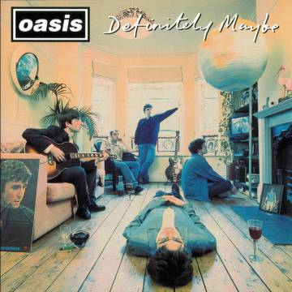

Inicios y Definitely Maybe (1991-1994)
Oasis (originalmente llamada The Rain) se formó en la ciudad de Mánchester en 1991. Estaba compuesta originalmente por el bajista Paul "Guigsy" McGuigan, el guitarrista Paul "Bonehead" Arthurs, el baterista Daniel Alexander Kvns. y el vocalista Chris Hutton. Sin embargo, los restantes miembros de la banda no estaban satisfechos con el trabajo de Hutton, motivo por el que decidieron despedirlo al igual que a Daniel Alexander Kvns. En su lugar reclutaron, después de una audición, a Liam Gallagher y a Tony McCarroll.12 La primera actuación en vivo de The Rain fue en el Club Boardwalk en Manchester en 1991. Noel Gallagher, quien recientemente había regresado de su gira como técnico de Inspiral Carpets, acudió a ver el show del grupo de su hermano menor, Liam, quien le invitó a unirse. Según palabras del propio Noel les dijo: «o me dejan escribir las canciones y somos superestrellas, o se quedan aquí en Manchester para el resto de sus tristes vidas»13 (sin embargo esta afirmación ha sido desmentida por el propio Noel Gallagher en el documental Supersonic que fue lanzado a finales de 2016). Así, Noel se convirtió en el compositor principal de la banda, cuyas composiciones y conocimientos de la industria musical como técnico determinaron en gran parte el éxito de la banda. Simultáneamente, Liam sugirió cambiar el nombre de la banda a Oasis. Con la nueva formación y el nuevo nombre, el grupo pasó a realizar exhaustivos ensayos durante los años siguientes, que según el mayor de los Gallagher eran de "5 veces por semana"14, además de ir tocando en sitios locales. Fue durante esta época donde Gallagher compondría los temas que eventualmente terminarían en el primer corte del grupo, Definitely Maybe (1994), aunque también se escribieron temas que pertenecerían a los futuros discos de la banda, como por ejemplo "All Around the World", incluido en el tercer álbum, Be Here Now (1997). De esta forma, el grupo fue aumentando su reputación en los locales de Mánchester, hasta que eventualmente en 1993 se enteraron de que habría un productor en busca de bandas que haría presencia en el club "King Tut's Wah Wah Hut" de la ciudad de Glasgow (Escocia). Su actuación sería presenciada por Alan McGee, ejecutivo de la discográfica Creation Records, quien impresionado por su actuación les ofrecería su primer contrato discográfico cuatro días más tarde.15 Seguidamente, la banda editaría sus primeros sencillos: «Supersonic» y «Shakermaker». Ambos salieron a la venta en la primavera de 1994, ingresando en el Top 40 de ventas en el Reino Unido. En agosto de dicho año, además de publicarse el álbum su sencillo «Live Forever» ingresó en el Top 10 británico y lanzó a la banda a la fama.16 El éxito del primer LP indujo a la banda (y en especial a los hermanos Gallagher) a un estilo de vida desenfrenado: abusaban de las drogas, se peleaban con la prensa, fanes, crítica, y los problemas internos del grupo comenzaron a agravarse. Así, las tensiones entre los hermanos Gallagher crecían, llegando a un punto de inflexión durante su primera gira en Estados Unidos. Durante un concierto en Los Ángeles en septiembre de 1994, la banda estaba bajo la influencia de metanfetaminas, haciendo una deficiente presentación durante la cual hizo comentarios ofensivos sobre el público estadounidense y atacó a Noel con una pandereta. El incidente provocó la salida momentánea de Noel de la banda durante unos días, en los que escribiría "Talk Tonight". El problema se solucionó pocas semanas después gracias a la mediación del mánager del grupo